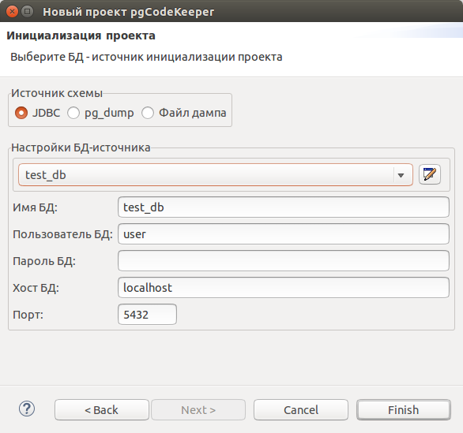

Открываем визард создания нового проекта: File -> New -> Project...
Выбираем Проект pgCodeKeeper. Нажимаем кнопку Next
Указываем имя и путь к проекту. Нажимаем кнопку Next.
Выбираем источник схемы: JDBC, pg_dump, файл дампа.
Рекомендуется настроить базы данных источника схем перед началом создания проекта при помощи настройки хранилища базы данных.
Возможны 3 варианта получения схемы БД:

Если источники схем не были настроены перед началом создания нового проекта, можно это сделать во время выбора типа источника схемы. Для JDBC или pg_dump необходимо нажать на иконку редактирования хранилищ БД справа от выбора источника БД. Появиться окно редактирования хранилища БД. Для файла дампа достаточно указать путь к файлу вручную или нажав на кнопку Обзор... и выбрав файл в появившемся диалоговорм окне.
После выбора источника схемы нажимаем кнопку Finish.
После короткого ожидания получаем проект и автоматически открывается pgCodeKeeper project view